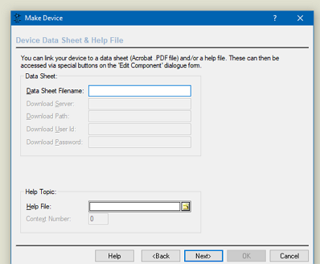

This dialogue form allows easier navigation through folders while saving and loading layouts, keeping track of libraries and creating paths to the directory where CADCAM files will be placed.
Provides options for the default behaviour of the File-Open directory. Options are to always use My Documents, to default to the last opened directory or to always open in a specified directory.
These option dictate whether component symbols are European or American standard. You will need to close and restart Proteus to reload the libraries before any changes here will take effect. These options affect parts selected into the design but do not adjust instances of a part that have already been placed on the schematic.
The templates path is used to specify the location or locations of your design templates and Bill of Materials templates. By default this is located within the Proteus directory of your installation but you can move this directory to a location of your choice. You can also add additional templates directories if for example, you want to have user design templates and company design templates in different directories.
Set the path(s) to the directory holding your library files. Proteus uses the library path(s) to locate all the schematic parts that have been created for use in Proteus. The libraries supplied with the software are located by default inside the Proteus directory of your installation but you can move them and/or add additional paths (on the network for example) as required.
Set or change the path for the storage and retrieval of Project Clips. These are sections of schematic and optionally associated layout that you want to re-use in future designs (e.g. power supply, USB connector circuit).
See Also:
Specify the path to locally stored datasheets on components. This is only relevant should you choose to specify / associate component parts with datasheets. If you do this you can set datasheet name and download locations when making devices in the Libraries via the Make Device wizard.

Set a value between 1 and 200 for the number of undo operations held in memory at any given time. The larger the number the more impact on computer memory and for most purposes the default of 20 is more than enough.
Proteus operates a system of incremental backups on save. These are saved into the specified Backups folder and work in a cyclical fashion. For example, when set to 10 the 11th save would overwrite the 1st backup so that the last 10 save operations were preserved in the Backups folder.
This can be any number between 1 and 100.
An autosave is not the same as a backup (which happens on a manual save). Autosave takes place while you are working and produces a temporary snapshot at regular intervals specified by this field.
This snapshot is then verified in the background by a second, silent copy of Proteus to ensure that it is not corrupted and that it can be loaded. After that it is placed into the Backups directory as an autosaved file.
Since autosaved files are verified they protect against a creeping error such as data corruption which could result in a normal backup being unloadable.
You can set the autosave interval from every 3 mins to every 60 mins. Bear in mind with large boards that it may take a second or so to save.
Autosave cannot take place while a modal dialogue is open but will be scheduled and will then complete as soon as the dialogue form is closed.
This is the location into which the file backups and autosave file will be processed. By default it is in the Project directory of your current project, although you can move it to another directory (e.g. a synched dropbox folder) by entering a suitable path and folder name.
Allows the provision of different sized icons, letting you choose the most appropriate for your monitor resolution.
Set the path(s) to the models directory (by default this is located inside the Proteus directory of your installation). Proteus looks inside the models directory before a simulation to find all the simulation models necessary for simulating the current schematic. While typically there would be no need to specify multiple paths here you can add additional models directories if need be (for example, if you have created some simulation models of your own and wish to keep them in a separate place from ours).
Set the path to the Results directory. (by default this is located inside the Proteus directory of your installation). The results path is used to store the results of graph based simulations, must be specified and there can be only be one results path.
Specify the amount of space (in Kbytes) that you wish to allocate your Results directory. ISIS deletes results files on a last recently used basis to restrict the amount of accumulated results data to this value.